
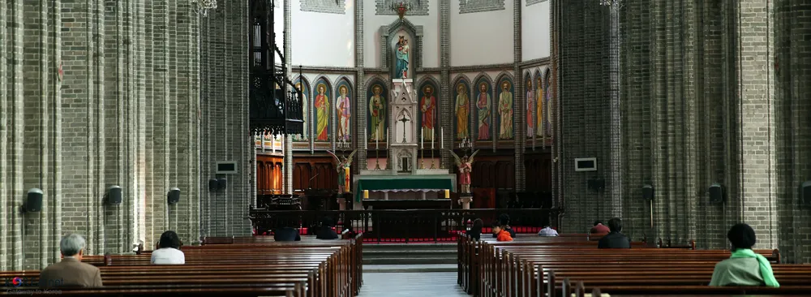

+

앞서 설명한 과정은 완전 FM 방식으로 하는 거라
성당마다 성지순례를 안하거나 교리반 시험을 생략하고 기도문을 암기했는지 찰고(면담)만 하는 경우도 있음 ㅇㅇ

+

앞서 설명한 과정은 완전 FM 방식으로 하는 거라
성당마다 성지순례를 안하거나 교리반 시험을 생략하고 기도문을 암기했는지 찰고(면담)만 하는 경우도 있음 ㅇㅇ
스테파노 어떨까요?
그리스도교의 첫 순교자로 군중들이 던진 돌에 맞아 순교하기 직전에
'주님, 이 죄를 저 사람들에게 돌리지 마십시오.' 군중들을 원망하지 않고 죄를 용서하기 위해 기도한 성인입니다.
대건 안드레아ㄱㄱ
생일 맞춰서 찾아보는 것도 좋음. 내 이름 찾는 거니까 요즘 트렌드 맞춘다고 괜히 남들 안하는 요상한 세례명 정하는 것 보다는 의미를 찾는게 좋다고 생각함.
몇월생이야
중학교때 과자 준다고 해서 세례받았는데 꽤 긴 시간이 필요했었넹
이스탄불에서 해외주재원 근무할때 세례받았는데 한인공동체 규모도 작고 해서 진짜 속성으로 세례받고 나중엔 세례받는 사람 대부 설 사람 부족하다고 견진도 진짜 속성으로 받았지. 거기선 사도신경도 아니고 미사때마다 니케아-콘스탄티노플 신경 외웠는데 나중에 진짜 니케아 공의회 장소 소풍으로 성당에서 가기도 했었음.
신부님 버튜버 방송보면서 알게된건데 6개월코스도 속성코스라며? 원래는 1년인데 우리나라는 전도지역이라서 짧게한다던데
원래 다니기는 했는데 교중미사도 잘 빼먹는 반냉담 양아치 신자였음. 가족 장례미사때 우르르 몰려와서 진심으로 기도해주는것에 생각이 바뀌어서 지금은 진심으로 다님..
견진까지 받고 냉담자가 되어버린 사람을 아시오
훈현소에서 세례까지 받았지만 아무것도 기억이 안남..
부사관학교에서 10주하고 세례받음
와이프가 ㅅㄴ퇴회자라 신부님 면담,교육만 1회씩 받고, 와이프한테 맨투맨 교육 받음.
세례명 추천좀여